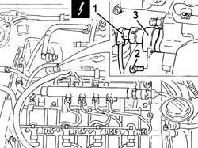
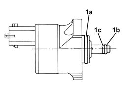

1060E50 Fuel pressure REGULATOR - R.R.
- Path
- Procedures > 10 ENGINE > 1060 DIESEL FUEL INJECTION > 1060E diesel pressure pump > 1060E50 Fuel pressure REGULATOR - R.R.
- Kind
- repair procedure (removal / refitting; the operation number is the code)
- Applies to
- engines: 1.9 JTD 16V; all production periods
- Interactive page
- https://sloeber94.github.io/elrnDB-a147/en/#/3025088
Applies to: engines: 1.9 JTD 16V; all production periods
 Dismantling
Dismantling
 Reassembling
ReassemblingEnsure that the ignition key is in OFF position, then disconnect the battery negative terminal (-).
 | Name | Connector |
|---|---|---|
- | Battery |
Proceed with removal 1016A10 sound-proofing cover - r + r .
Proceed with removal 1060F50 fuel return manifold - r r .
Clean the high pressure pump using cold cleaning products and dry with compressed air.
1. Disconnect the electrical connection from the fuel pressure regulator.
| Name | Connector |
|---|---|---|
1 | Fuel pressure regulator |
2. Undo the bolts fixing the fuel pressure regulator.
3. Rotate the pressure regulator, by hand, in an anti-clockwise direction and remove it.

Applies to: engines: 1.9 JTD 16V; all production periods
Remove the dirt in the pressure pump opening and in the spaces on the surface.
Applies to: engines: 1.9 JTD 16V; all production periods
Reassembling
DismantlingBefore refitting the fuel pressure regulator, check that the metal seal (1a), the black or green seal (1b) and the white support seal (1c) are intact and correctly housed.

Applies to: engines: 1.9 JTD 16V; all production periods
Lubricate all the seals using clean diesel fuel.
Place the fuel pressure regulator back in its housing on the pressure pump.
Rotate the fuel pressure regulator by hand in an anti-clockwise direction and press until it is in contact with the matching surfaces.
Position the fuel pressure regulator correctly.
Tighten the bolts fixing the fuel pressure regulator to the recommended torque.
 | Fastening | Component | Ø | Value (daNm) |
|---|---|---|---|---|
- | Bolt | PRESSURE REGULATOR ON DS PRESSURE PUMP | - | 08 10 |
Connect the electrical connection to the fuel pressure regulator.
Proceed with refitting 1060F50 fuel return manifold - r r .
Proceed with refitting 1016A10 sound-proofing cover - r + r .
Connect the negative (-) battery terminal.
Topics linked from this page (4)
- 1016A10 sound-proofing cover - r + r
- 1060F50 fuel return manifold - r r
- A1B Battery ( Connectors )
- N77 Fuel pressure regulator